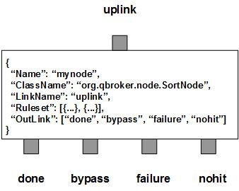

SortNode maintains a session and withholds JMS messages for the baking process. Once the messages are fully baked, it sorts them according to their sorting keys and the pre-defined rulesets. It routes them out to four outlinks: done for sorted messages, bypass for messages which are out of order, nohit for those messages do not belong to any rulesets and failure for the messages failed in the baking or sorting process. Since SortNode does not consume any messages, any incoming message has to find a way out via one of the four outlinks. Therefore, the messages exiting from done are in right order.
SortNode contains a number of pre-defined rulesets. These rulesets categorize messages into non-overlapping groups. Therefore, each rule defines a unique message group. The ruleset also defines the sorting options for the messages in each group as well as the parameters used in the baking process. All the groups must share the same key type. But different groups may have their own way to construct the sorting key. The number of messages withheld for baking process is tracked via the RULE_PEND field. Furthermore, SortNode always creates one extra ruleset, nohit. The ruleset of nohit is for all the messages not hitting any of the patterns.
SortNode supports both the dynamic session and the baking process. It is determined by BakeTime in millisecond and SessionTimeout in second. If both BakeTime and SessionTimeout are set to 0 as the default, the session will be maintained as static without cache. In this case, the messages with the keys of the first series will be routed to done. The first series of keys are a set of keys whose value are always larger than those before it. Other messages will be treated as out of order and are routed to bypass. If BakeTime is 0 but SessionTimeout is larger than zero, the session will be maintained dynamically with cache. In this case, SortNode will withhold all incoming messages and tracks the mtime of the cache. If the cache has no changes within the recent SessionTimeout seconds, all the messages in the cache will be flushed out with the sorted order. If BakeTime is larger than zero, the dynamic session will be controlled by the baking process. In this case, the incoming messages will be baked rather than statically withheld. During the baking process, some of the incoming messages will be routed out right away. But majority of them will be withheld for a certain time peroid.
BakeTime is the minimum time for the reference message of a session to be withheld in case other low-key messages arriving late. The reference message is the most baked message with a higher key value than the threshold which is the highest key value for the previous session. We are not sure that how many messages with lower key values will come after the reference message. However, we are sure after certain time (BakeTime), the chance to have messages with lower key values is minimal. Therefore, SortNode keeps the reference message and the other new messages in the cache to bake. Once time is up, there is at least one fully baked message in the session. SortNode will look for the highest key value among all the fully baked messages. The highest value will be saved as the threshold for the next session. All the messages with either lower key values or the same key value as compared to the threshold will be flushed out according to the ascending order of their keys. If there are messages left, they are not fully baked yet and will be baked once more in the next session. In this case, SortNode will find the most baked message as the reference message for the new session. Otherwise, the first message will be the referece message in the new session. This way, SortNode will smooth out the fluctuations on the key values of message stream and recovers their original order.
SortNode also supports the claim mode. If there is at least one claim ruleset defined, the node has its claim mode on. A claim ruleset is similar to a baking ruleset. The only difference on the configurations is that the former has also defined RuleType as "claim". However, the impact on the node is huge, even for the baking rulesets. With the claim mode enabled, the routing policy of the node will be totally different from the case where the claim mode is off by default. The claim rule is designed for active-active message flow clusters only. It assumes that both the master and the worker flows are processing the same set of incoming messages. Meanwhile, the master flow also escalates each processed message to the worker flow via the cluster communication channels. Therefore, the SortNode on the claim mode is supposed to be paired with an instance of ActionNode on the same flow. Even though both the SortNode and the ActionNode are running on the same flow and they shared the same uplink, their status are mutually exclusive on any given instance of the flow. On the master flow, the SortNode is always disabled while the ActionNode is always enabled. The ActionNode will process all the incoming messages and escalates each of them to the worker flow. On the worker flow, the ActionNode is always disabled while the SortNode is always enabled. Therefore, the SortNode processes the incoming messages. Since the container of the worker flow will forward the escalated messages to the SortNode, they will be processed by the SortNode to claim the baked incoming messages.
For a SortNode with the claim mode on, it allows the baking rules and the claim rules to define IDTemplate. The IDTemplate specifies the way to extract a unique ID from the messages. These IDs will be cached into a separate cache to indicate those messages have been processed on the master flow. There is no requirement on the order for the IDs. But if there is no IDTemplate defined, the ID will be same as the key. The messages of claim rulesets will be used to terminate the baking process if their keys match any cached keys. On the other hand, if the incoming message has the same ID in the ID cache, it will not be baked at all since it has already been processed on the master. All the cached incoming messages with the lower or * equal key values will be flushed to the bypass outlink. We called the cached messages are claimed rather than fully baked. The claiming messages will be routed to the nohit outlink. For those fully baked messages, SortNode will route them to the done outlink since they have not been claimed within the time window. The rest of incoming messages are still in the baking process. Since they are not claimed yet, it means they are not processed by the master flow yet. When a failover occurs, the worker flow will be promoted to the new master after the original master flow has been demoted to the new worker or stopped. The container will swap the status of the SortNode and the ActionNode. All the unclaimed messages will be rolled back to the uplink. So they will be processed by the ActionNode for escalations. This way, there is no message lost or double fed. If you are going to implement the active-active message flow cluster with a SortNode on the claim mode and an ActionNode for escalations, please make sure the uplink of the SortNode has the 2nd half of the cells unused. The unused partition will be reserved for escalations so that the container is able to forward the escalations.
SortNode will not consume any messages. But it may remove the withheld messages from the uplink for certain rulesets. If EXTERNAL_XA bit is set on the uplink, those removed messages will be acknowledged as well. Eventually, those removed and withheld messages will continue to propagate downstreams as usual. This feature is controlled by XAMode of the ruleset. If XAMode is not defined in a ruleset, the ruleset will inherit it from the node, which will be 1 by default. If it is set to 0, all the withheld messages for the ruleset will be acknowledged and removed from the uplink. There is a big consequence to disable XA on a ruleset. Please be extremely careful if you wnat to disable XA on any ruleset.
Here are considerations on when to disable XA on a ruleset. First, you may want SortNode to withhold more messages than the capacity of the uplink. Second, the source JMS servers may not be able to handle large amount of unacknowledged messages. In these cases, XAMode of certain rulesets may be set to zero explicitly to disable the XA. As you know, most of the JMS vendors implement message acknowledgement via sessions. The acknowledgement by SortNode may upset the XA control of the message flow.
You are free to choose any names for the four fixed outlinks. But SortNode always assumes the first outlink for done, the second for bypass, the third for failure and the last for nohit.
Apart from the common properties, there are some implementation specific properties for SortNode.
| Property Name | Data Type | Requirement | Description | Examples |
|---|---|---|---|---|
| SessionTimeout | integer | optional | seconds for messages withheld in the session | 30 (default: 0) |
| SessionSize | integer | optional | max number of messages withheld in the session | 1024 (default: 40960) |
| BakeTime | integer | optional | bake time in milli-seconds | 30000 (default: 0) |
| SortKeyType | string | optional | data type of the key | long |
The bake operation is executed via the pre-defined rulesets. Therefore, the configuration of the rulesets is critical to the operations of SortNode. Here are complete properties of rulesets for SortNode.
| Property Name | Data Type | Requirement | Description | Examples |
|---|---|---|---|---|
| Name | alphanumeric with no spaces | mandatory | name of the ruleset | event |
| TimeToLive | integer | optional | seconds to expire the session | |
| RuleType | string | optional | type of the rule | claim |
| XAMode | integer | optional | flag for XA | 1 |
| TimePattern | string | optional | time pattern for the sort key in case of time | |
| IDTemplate | string | optional | template for the unique key | string |
| KeyTemplate | string | optional | template for the sort key | ##Count## |
| KeySubstitution | string | optional | text subsctitution for the sort key | s/^0// |
| PreferredOutLink | alphanumeric with no spaces | mandatory for bypass only | name of the preferred outlink | bypass |
| FormatterArgument | list | optional | list of post format operations | see example |
| JMSPropertyGroup | list | optional | list of pattern groups on properties to select messages | see example |
| XJMSPropertyGroup | list | optional | list of pattern groups on properties to exclude messages | see example |
| PatternGroup | list | optional | list of pattern groups on body to select messages | see example |
| XPatternGroup | list | optional | list of pattern groups on body to exclude messages | see example |
| StringProperty | map | optional | for setting the user properties on the messages | see example |
{
...
"Ruleset": [{
"Name": "bypass",
"PreferredOutLink": "BYPASS",
"JMSPropertyGroup": [{
"JMSType": "^score$"
}]
}],
...
}
where it sends the messages to the outlink of BYPASS without processing them.
Here is an example of the claim ruleset.
{
...
"Ruleset": [{
"Name": "claim_file",
"RuleType": "claim",
"JMSPropertyGroup": [{
"category": ".",
"messageType": "^6$"
}],
"KeyTemplate": "##timeStamp##",
"IDTemplate": "##serverIP##/##timeStamp##/##notificationType##/##fileURL##",
"TimeToLive": "600"
}],
...
}
where it will claim the messages withheld in the baking process.
Here is an example of SortNode:
{
"Name": "node_sort",
"ClassName": "org.qbroker.node.SortNode",
"Description": "test",
"Operation": "sort",
"LinkName": "omn",
"Capacity": "2048",
"XAMode": "1",
"Debug": "1",
"SessionTimeout": "100",
"BakeTime": "100000",
"SessionSize": "1024",
"DisplayMask": "22",
"SortKeyType": "long",
"StringProperty": {
"type": ""
},
"Ruleset": [{
"Name": "claim_file",
"RuleType": "claim",
"JMSPropertyGroup": [{
"category": ".",
"messageType": "^6$"
}],
"KeyTemplate": "##timeStamp##",
"IDTemplate": "##serverIP##/##timeStamp##/##notificationType##/##fileURL##",
"TimeToLive": "600"
},{
"Name": "file",
"JMSPropertyGroup": [{
"timeStamp": ".",
"messageType": "^6$"
}],
"KeyTemplate": "##timeStamp##",
"IDTemplate": "##serverIP##/##timeStamp##/##notificationType##/##fileURL##"
},{
"Name": "claim_job",
"RuleType": "claim",
"JMSPropertyGroup": [{
"category": ".",
"messageType": "^8$"
}],
"KeyTemplate": "##timeStamp##",
"IDTemplate": "##guid##/##status##",
"TimeToLive": "600"
},{
"Name": "job",
"JMSPropertyGroup": [{
"timeStamp": ".",
"messageType": "^8$"
}],
"KeyTemplate": "##timeStamp##",
"IDTemplate": "##guid##/##status##"
}],
"OutLink": ["file", {
"Name": "null",
"Capacity": "128",
"Partition": "64,64"
}, "failure", "nohit"]
}
where the node is on the claim mode. Since the uplink, omn, has the
capacity of 32, the partition of (16, 16) is supposed to be reserved for
escalations.